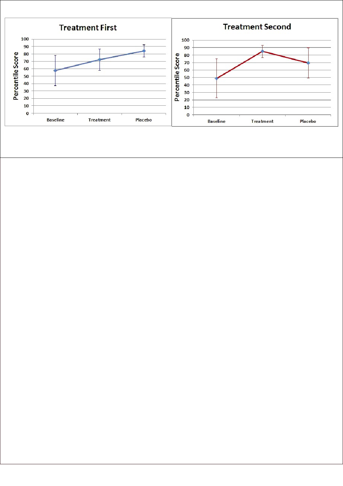

24 ADVANCES, SPRING 2013, VOL. 27, NO. 2
Amen—Nutrients Improve Brain Function
Eects of Brain-directed Nutrients on
Cerebral Blood Flow and Neuropsychological
Testing: A Randomized, Double-blind,
Placebo-controlled, Crossover Trial
Daniel G. Amen, MD; Derek V. Taylor; Kristine Ojala; Jasleen Kaur; Kristen Willeumier, PhD
ORIGINAL RESEARCH
ABSTRACT
Context • In a prior open trial of professional football
players who displayed the eects of traumatic brain injury,
the current reserach team reported significant
improvements in clinical symptoms, neuropsychological
testing and regional cerebral blood ow (rCBF) following
the use of brain-directed nutrients (BDNs) and lifestyle
interventions.
Objective • e current study intended to determine
whether supplementation with BDNs improved rCBF and
neuropsychological function in healthy individuals.
Design • e current study was a randomized, double-
blind, placebo-controlled, crossover trial, which was a
more rigorous reseach design than the prior study and did
not include lifestyle interventions.
Setting • Participants underwent evaluation and testing at
the Amen Clinics, Inc, a private medical facility in
Newport Beach, CA.
Participants • irty healthy adult (15 male and 15
female) participants were recruited from the community
though local advertising and met the requirements for
eligibility into the study. Twenty-ve individuals completed
the study, with dropout due to events unrelated to the
study itself.
Intervention • e participants were randomly assigned
to a treatment order for intervention, either placebo or
brain supplements rst. e BDNs treatment was
comprised of three supplements: sh oil; a high-potency,
multiple vitamin/mineral supplement; and a brain-
enhancement supplement. e placebo treatment was two
supplements comprised of rice our to replace the multiple
vitamin/mineral complex and the brain-enhancement
supplement and one supplement made of other oils to
replace the sh-oil mixture. Aer 2 mo of this rst
intervention, a crossover intervention occurred for a nal
2 mo, in which participants formerly receiving BDNs
received a placebo treatment and participants formerly
treated with placebo received the BDNs treatment.
Outcome Measures • Primary outcome measures included
(1) an analysis of the changes in rCBF using SPECT and
(2) an assessment of the dierences in cognitive and
emotional function using the MicroCog (cognitive
performance), the WebNeuro (emotional state), and three
psychological inventories—the Beck Depression Inventory
(BDI-II), Brief Symptom Inventory (BSI), and Quality of
Life Inventory (QOLI).
Results • A region of interest (ROI) analysis for each of
the 2-mo phases (baseline, then placebo and treatment
according to randomized order) showed signicant
improvement in rCBF for the BDNs as compared to the
placebo (as assigned at the start of the rst intervention)
in the prefrontal cortex, anterior and posterior cingulate
gyrus, hippocampus, and cerebellum. Significant
improvements were observed for the BDNs (1) on the
MicroCog—reasoning, P = .008; memory, P = .014;
information processing accuracy, P = .027; (2) on the
WebNeuro—executive function, P = .002, information
processing eciency, P = .015; depressed mood, P = .017,
and emotional identication, P = .041; and (3) on the
BSI—positive symptom total, P = .024 and reduced
hostility, P = .018. For the last, signicance occurred upon
accounting for the eect of order.
Conclusion • is study demonstrates the potential
effectiveness of BDNs in enhancing rCBF and
neuropsychological function across various cognitive and
psychological domains. (Adv Mind Body Med.
2013;27(2):24-33.)
ADVANCES, SPRING 2013, VOL. 27. NO. 2 25
Amen—Nutrients Improve Brain Function
Daniel G. Amen, MD, is the medical director of Amen
Clinics in Newport Beach, California. Derek Taylor is a
research associate at Amen Clinics; Kristine Ojala and
Jasleen Kaur are research assistants at Amen Clinics;
Kristen Willeumier, PhD, is the director of research at
Amen Clinics.
Corresponding author: Daniel G. Amen, MD
E-mail address: docamen@amenclinic.com
T
he use of natural, plant-based supplements and
Chinese herbs to support cognitive health and reduce
brain aging is an evolving eld, with nutrients being
more frequently investigated as a rst-line therapeutic strat-
egy in clinical settings. Evidence in the literature supports
the use of nutrient-based therapies for this purpose, but
more high-quality, double-blind, randomized, controlled tri-
als (RCTs) are required to explore their ecacy. It has been
shown that older individuals who are cognitively normal
may have undiagnosed Alzheimer’s disease (AD) pathology
1
and cerebrovascular disease.
2
Several herbal ingredients have
been shown to be clinically eective at improving brain func-
tion by enhancing antioxidant, cholinergic, and cerebrovas-
cular function.
One such ingredient is huperzine A, an alkaloid extract-
ed from Chinese club moss, Huperzia serrata. It functions as
a reversible, selective inhibitor of acetylcholinesterase
3
but
has also been shown to protect against oxidative injury, neu-
ronal apoptosis, and glutamate-induced toxicity.
4,5
Ginkgo
biloba is a Chinese herb that has been shown to improve
vascular function, scavenge free radicals, lower oxidative
stress, and protect mitochondrial function.
6,7
It has been
evaluated for its cognitive-enhancing properties in large
clinical trials of AD, but the evidence of its ecacy is still
controversial.
8,9
Vinpocetine, an alkaloid compound extract-
ed from the periwinkle plant (Vinca minor), functions as a
phosphodiesterase inhibitor. It is an eective vasodilator
10
and has been used in the prevention of cerebrovascular dis-
eases
11
and in cognitive enhancement
12
and has also been
shown to have anti-inammatory and neuroprotective prop-
erties.
13
PET studies demonstrate vinpocetine’s global uptake
across the brain,
14,15
and its ability to eectively regulate
blood ow and metabolism.
16
Taken together, the literature
provides growing evidence that supports the ecacy of these
plant-based extracts in exerting signicant eects on cogni-
tion and blood ow when used individually. When they are
combined with other BDNs, their synergistic properties oer
the potential to exert more robust eects on brain function.
e current research team has previously demonstrated
that a combination of BDNs resulted in signicant improve-
ments in regional cerebral blood ow (rCBF), mood, and
cognition in a group of active and retired professional foot-
ball players who showed signs of chronic traumatic brain
injury (TBI) as a result of repetitive, subconcussive impacts
to the head.
17
Specically, the team reported global increases
in rCBF as measured by single photon emission computed
tomography (SPECT) imaging as well as signicant improve-
ments across several cognitive domains, including general
cognitive function, general cognitive prociency, reasoning,
attention, and memory, as determined by the MicroCog neu-
ropsychological assessment.
at prior study was an open-label design using BDNs
comprised of a comprehensive, multiple vitamin/mineral
complex (Table 1), omega-3 fatty acids, and a brain-enhance-
ment supplement containing: (1) N-acetylcysteine (NAC)
18
and α-lipoic acid
19
to improve antioxidant levels, (2) phos-
phatidylserine to help regulate cortisol levels,
20
(3) huperzine
A
21
and acetyl-L-carnitine (ALC)
22
to enhance acetylcholine
availability, and (4) vinpocetine
15,23
and Ginkgo biloba
24
to
enhance blood ow. In addition, the study included educa-
tion on diet, exercise, weight loss, substance use, and sleep.
e major limitation of this study’s design was the fact that it
did not use a randomized sample and was not placebo-con-
trolled, and the results for the supplements were confounded
by the simultaneous lifestyle interventions that alone could
have accounted for the improvement.
In an eort to establish the ecacy of BDNs within a
typical population, the current research team has investigat-
ed these nutrients in a double-blind RCT, at lower dosages
than in its previous study and in the absence of lifestyle edu-
cation or additional interventions. Lower dosages of the
BDNs were used under the assumption that healthy individ-
uals would exhibit fewer cognitive decits and emotional
impairments than professional football players and would
require lower dosages to obtain a positive eect. e team
measured cerebral perfusion (SPECT imaging), cognitive
performance (MicroCog), emotional state (WebNeuro), and
psychological well-being (BDI-II, BSI, QOLI) in BDNs- and
placebo-treated groups at baseline, at 2 months following the
rst intervention, and at 4 months following a crossover
intervention.
METHODS
Participants
is study was approved and monitored by the Lange
Research Group Institutional Review Board. Fieen adult
men and 15 adult women were recruited from the commu-
nity through local advertising to volunteer to participate in a
randomized, double-blind, placebo-controlled, crossover
study to demonstrate the clinical utility of BDNs. Each par-
ticipant was educated on the study and gave written informed
consent. Potential participants were screened for eligibility
using (1) a detailed clinical history, which included both
medical and psychiatric parameters; (2) the Structured
Clinical Interview for DSM-IV (SCID) from Multi-Health
Systems and American Psychiatric Press (North Tonawanda,
NY, USA); (3) the Beck Depression Inventory-II (BDI-II)
from Pearson (San Antonio, TX, USA); (4) the Brief Symptom
26 ADVANCES, SPRING 2013, VOL. 27, NO. 2
Amen—Nutrients Improve Brain Function
Table 1. NeuroVite Plus Composition (Four Capsules)
Ingredient Compound Dose
Vitamin A Retinyl acetate 2500 IU
Vitamin A β-Carotene 2500 IU
Vitamin C Magnesium ascorbate 200 mg
Vitamin D
3
Cholecalciferol 2000 IU
Vitamin E D-α-tocopheryl acid succinate,
di-α-tocopheryl acetate
70 IU
Vitamin K
2
Menaquinone (MK-7) 45 mcg
Vitamin B
1
iamin mononitrate 15 mg
Vitamin B
2
Riboavin 17 mg
Vitamin B
3
Niacinamide 50 mg
Vitamin B
5
D-calcium pantothenate 50 mg
Vitamin B
6
Pyridoxine HCL, pyridoxal-5-phosphate 20 mg
Vitamin B
12
Cyanocobalamin, methylcobalamin 500 mcg
Folic acid 5-methyltetrahydrofolic acid 400 mcg
Biotin 300 mcg
Choline Bitartrate 55 mg
Calcium Calcium carbonate 50 mg
Magnesium Magnesium oxide, magnesium ascorbate 50 mg
Manganese Manganese glycinate 5 mg
Zinc Zinc glycinate 7.5 mg
Copper Copper glycinate 1 mg
Chromium Picolinate, histidinate, Chromax 200 mcg
Molybdenum Molybdenum glycinate 50 mcg
Iodine Potassium iodide 75 mcg
Selenium SelenoExcell high selenium yeast 200 mcg
Lycopene Tomato extract 3 mg
Lutein 3 mg
Quercetin Quercetin dihydrate 30 mg
Broccoli sprout powder Minimum 10% glucoraphanin 50 mg
Hesperidin complex 20 mg
Resveratrol 10 mg
Pterostilbene powder 20 mcg
Vanadium Nicotinate glycinate chelate 25 mcg
Proprietary organic fruit and vegetable blend
a
140 mg
Brain boosting blend
b
575 mg
Full-spectrum digestive enzyme blend
c
30 mg
a
Wild blueberries, broccoli, tomato, spinach, acai, carrot, strawberry, alfalfa sprouts.
b
Acetyl-L-carnitine, α-lipoic acid, phosphatidylserine, CoQ10.
c
With lipase, amylase, lactase, cellulase, protease. Other ingredients: gelatin (capsule),
dicalcium phosphate, microcrystalline cellulose, silica, magnesium stearate, calcium sulfate,
β-cyclodextrin, starch, rice protein, palm oil, corn starch, sunower oil, ascorbyl
palmitate, lecithin, sodium copper chlorophyllin, titanium dioxide.

ADVANCES, SPRING 2013, VOL. 27. NO. 2 27
Amen—Nutrients Improve Brain Function
Inventory (BSI) from Pearson; and (5) the Quality of Life
Inventory (QOLI) from Pearson.
e study excluded individuals who (1) had a current
DSM-IV psychiatric disorder as assessed by clinical
examination or SCID; (2) had a score greater than 21 on the
BDI-II; and (3) were on psychiatric medications. Participants
in the study were screened to exclude medical, neurological,
and psychiatric conditions, including substance abuse. Of
the 30 individuals recruited for the study who underwent the
baseline evaluation, only 25 individuals completed the study.
Five participants dropped out at various time points due to
reasons unrelated to the study.
ose participants who passed the exclusion screening
but who were taking nonpsychiatric medications, such as
blood pressure or birth control pills, were asked to report any
changes in dosage during the length of the study to the
study’s coordinator.
Design
Aer participants qualied to participate, they com-
pleted the following baseline measures: (1) technetium-hex-
amethylpropyleneamine oxime (Tc-HMPAO) brain SPECT
imagaing, a measure of rCBF, occurs immediately aer per-
forming the Connors’ Continuous Performance Task (CCPT-
II) from Multi-Health Systems (North Tonawanda, NY,
USA), a measure of attention and response inhibition; (2)
MicroCog from Pearson, a computerized neuropsychologi-
cal test that measures across nine cognitive domains; and (3)
WebNeuro from Brain Resources (San Francisco, CA, USA),
a computerized neuropsychological test that measures across
14 dierent domains in the areas of self-regulation, feeling,
thinking, and emotion.
Following baseline testing, participants were random-
ized to the BDNs or placebo group by an independent
administrator, ensuring that the research sta remained
blind to each participant’s intervention. Upon completion of
the rst intervention (BDNs or placebo) at the 2-month
point, participants were retested using the baseline assess-
ments, which included brain SPECT imaging, neuropsycho-
logical assessments (MicroCog and WebNeuro), and psycho-
logical inventories (BDI-II, BSI, and QOLI).
e participants were then assigned to the crossover
intervention (BDNs or placebo treatment) for the nal 2
months. Upon completion of the intervention, participants
completed all of the above listed measurements in a nal
testing.
Intervention and Rationale
In both the rst intervention and the crossover interven-
tion, participants were administered BDNs or a placebo. e
BDNs comprised three products.
Fish Oil. e dosage was 2.8 g of sh oil per day in two
capsules, containing 860 mg of EPA and 580 mg of DHA.
Omega-3 fatty acids have been demonstrated to improve
memory, mood, and cognition, providing the rationale for
inclusion of that supplement in the nutrient system.
25,26
High-potency, Multiple Vitamin/Mineral Supplement.
e dosage was four capsules. See Table 1 for the ingredients.
is supplement was included because research supports the
use of multivitamins to enhance mental performance.
27
Brain-enhancement Supplement. Provided in four
capsules, this supplement contained nutrients (1) to increase
blood ow—80 mg Ginkgo biloba
24
and 10 mg vinpocetine
15,23
;
(2) to modulate cortisol production—67 mg phosphatidyl-
serine
20
; (3) to elevate acetylcholine levels—667 mg acetyl-L-
carnitine
22
and 100 mcg huperzine A
21
; and (4) to enhance
antioxidant production—200 mg α-lipoic acid
19
and 400 mg
N-acetyl-cysteine.
18
Acetyl-L-carnitine, α-lipoic acid, Ginkgo
biloba, N-acetyl-L-cysteine, and phosphatidylserine have
been tested extensively and used in the supplement market;
thus they are considered safe and eective for long-term
use.
However, some of the ingredients in the study’s brain-
enhancement supplement that are newer to the market for
nutritional supplements require some justication regarding
dosage and safety. One of these ingredients was huperzine A,
which was included in the brain-enhancement supplement at
100 mcg as the primary cognitive enhancer. Several meta-
analysis studies
4,28
have been performed that demonstrate
that dosages within the range of 200 to 400 mcg are consid-
ered safe and that they eectively improved general cognitive
function at 6 weeks as assessed by the Mini-Mental State
Examination (MMSE)
29
(Psychological Assessment
Resources, Lutz, FL, USA).
30
Another ingredient in that same supplement is vinpo-
cetine, which was included at 10 mg to enhance cognition
and improve blood ow to the brain. In a large, multicenter
study, vinpocetine was administered (3 × 10 mg) to 203
patients with dementia and cognitive impairment, and a
16-week treatment protocol resulted in a signicant improve-
ment as measured by a cognitive performance scale.
12
In an
RCT where 12 healthy female volunteers were administered
vinpocetine or placebo in 10-, 20-, or 40-mg doses for 2 days,
the researchers demonstrated that a 40-mg dose eectively
improved memory as measured by the Sternberg Memory
Scanning Task (SMS-Task),
31,32
a high-speed scanning in
human memory, demonstrating the potential of this nutrient
to work quickly in a short time frame if given at a sucient
dosage.
33
And nally, a double-blind RCT studied the eects of
Ginkgo biloba, another ingredient of the current study’s
brain-enhancement supplement, on 20 outpatients with
Alzheimer’s-type degenerative dementia. e study used a
240-mg dose over 3 months and resulted in improvements
on the Syndrom-Kurz Test (SKT)
34
(Geromed GmbH,
Spardorf, Bavaria, Germany), a neurocognitive test used to
assess decits of attention and memory and on functional
EEG ndings.
35
Given this evidence, the current research
team concluded that these nutrients had the potential to
exert measurable cognitive-enhancement eects and would
be safe to be taken over 8 weeks. e team decided to use
lower dosages of the individual ingredients, with the hypoth-
28 ADVANCES, SPRING 2013, VOL. 27, NO. 2
Amen—Nutrients Improve Brain Function
esis that they would act in a synergistic fashion with the
other BDNs.
e placebo group received a combination of three
supplements. e multiple vitamin/mineral complex and the
brain enhancement supplement were comprised of rice our,
while the sh-oil control mixture of oils comprised olive oil
(319 mg), soybean oil (262 mg), palm oil (205 mg), coconut
oil (205 mg), canola oil (103 mg), natural lemon avor (22
mg), and natural mixed tocopherols (3 mg).
ANALySIS
Brain SPECT Imaging and ROI Analysis
Participants underwent high-resolution brain SPECT
imaging to measure rCBF during a concentration task. Each
participant received an age/weight-appropriate dose of tech-
netium-99m hexamethylpropyleneamine oxime (Tc-99m
HMPAO) intravenously in a dimly lit room while perform-
ing the CCPT-II. e radiopharmaceutical was injected 3
minutes aer starting the 15-minute test. Participants were
then scanned 30 to 45 minutes aer injection using a Picker
Prism 3000XP, triple-headed, gamma camera with low-ener-
gy, high-resolution, fan-beam collimators (Eclipse Systems,
Inc, Bedford Heights, OH, USA). Data was acquired in 128 ×
128 matrices, which yielded 120 images per scan, with each
image separated by 3° and with a span of 360°. SPECT data
was processed, smoothed, and corrected for attenuation
using general linear (Chang) methods.
36
All images were
reconstructed using an oblique reformatting program and
oriented according to anterior-posterior commissure line,
and the nal images were similarly aligned for analysis.
Dierences in Tc-HMPAO uptake in the whole brain
and in regions of interest (ROIs) were analyzed using the
Automated Anatomical Labeling (AAL) atlas,
37
which con-
sists of 128 brain regions dened across both hemispheres,
using ROI Extract soware (Amen Clinics, Inc, Newport
Beach, CA, USA). To minimize disruption to the individual
scans caused by transforming the processed imaging data
into stereotaxic space for ROI analysis, the ROI Extract so-
ware transforms the stereotaxic atlas into the individual scan
space. e processed reconstructed images were le
unchanged. Spatial normalization and alignment of the atlas
to the individual space was performed using a mutual,
information-based, ane registration
38
algorithm, imple-
mented using the ITK Insight Toolkit (Kitware, Clion Park,
NY, USA). e mutual information-registration algorithm
used in ROI Extract nds an ane transformation of a
canonical SPECT scan template in Montreal Neurological
Institute (MNI) space that minimizes the joint entropy
between the unchanged individual image and the trans-
formed atlas image. e resulting ane transformation
matrix is then applied to the atlas label map, transforming it
into the participant’s specic space. Aer the atlas has been
transformed into the individual space, ROI metrics can be
calculated, including the region’s mean, standard deviation,
and minimum and maximum.
ROI means were analyzed using SPSS statistical soware
(SPSS Inc, Chicago, IL, USA) using a within-participant,
repeated measures ANOVA that was modeled from baseline
to treatment and back to placebo regardless of the actual
randomized presentation order. e research team tested the
hypothesis that treatment with BDNs would elicit a measur-
able response with a return toward baseline values upon
administration of the placebo, independent of randomized
order (signicant quadratic response). In addition, the eect
of treatment order was tested for each region as a between
factor to ascertain whether treatment with BDNs had any
carryover eect that might obfuscate treatment response.
Post hoc, paired t tests were used for between-condition
comparisons.
Inventory and Neuropsychological Tests Analyses
All measures were analyzed using a within-participant,
repeated measures ANOVA that was modeled from baseline
to treatment and back to placebo regardless of actual ran-
domized presentation order. e research team tested the
hypothesis that treatment with the BDNs would elicit a mea-
surable response, with a return toward baseline values upon
administration of the placebo, independent of randomized
order (signicant quadratic response). In addition, the eect
of treatment order was tested for each measure as a between
factor to ascertain whether treatment had any carryover
eect that might obfuscate the treatment response. Post hoc,
paired t tests were used for between-condition comparisons.
RESULTS
No participant dropped out due to side eects. Only one
adverse incident was reported, which was dizziness. Aer the
participant’s blood pressure medication was adjusted down-
ward, the dizziness was alleviated.
SPECT ROI Findings for rCBF
When compared to baseline, 30 brain regions showed
signicantly increased rCBF following the BDNs treatment
versus placebo (Table 2). ese areas included the prefrontal
cortex, anterior and posterior cingulate, hippocampus, para-
hippocampus as well as regions in the occipital lobes (cuneus
and calcarine), thalamus, and cerebellar region 10, Crus II,
and vermis 9. Four other areas became signicant when the
eect of order was considered, including the right-frontal,
midorbital region; le olfactory region; le insula; and right
precuneus. is nding indicates that the eect of taking the
BDNs in the study’s rst intervention period versus the sec-
ond intervention period had a signicant inuence on the
results.
Inventory and Neuropsychological Tests Results
e research team observed improvements for partici-
pants in the BDNs treatment across various domains of the
psychological and neuropsychiatric assessments that were
administered. See Table 3 for scores on assessments at base-
line for the entire group and at the end of the study aer the
crossover intervention for treatment with the placebo versus
ADVANCES, SPRING 2013, VOL. 27. NO. 2 29
Amen—Nutrients Improve Brain Function
Table 2. Signicant ROI in the BDNs Compared to Placebo
a
Region Baseline Placebo BDNs P Va lu e
Frontal
Frontal midorbital L 592.6 612.9 624.0 .014
Frontal midorbital R 588.9 603.4 619.1 .048
b
Frontal inferior gyrus R 492.3 504.9 509.1 .037
Frontal mid L 479.0 493.7 510.9 .048
Olfactory L 554.4 588.5 593.4 .044
b
Insula L 620.3 653.2 662.0 .045
b
Cingulate
Cingulate, anterior L 612.5 628.7 649.2 .012
Cingulate, anterior R 559.5 590.2 601.8 .021
Cingulate, posterior L 612.5 628.7 649.2 .027
Cingulate, posterior R 559.5 590.2 601.8 .044
Temporal Lobe
Hippocampus L 534.1 564.8 577.2 .019
Hippocampus R 549.7 577.1 585.6 .047
Parahippocampus L 471.0 498.3 503.7 .046
Temporal mid L 533.8 556.4 565.6 .039
Temporal inf post R 401.7 404.4 420.2 .036
Temporal mid post L 536.6 554.1 564.8 .037
Temporal mid post R 476.4 487.1 501.2 .041
Occipital-Parietal Lobe
Precuneus R 539.9 572.0 574.0 .038
b
Cuneus L 528.0 551.0 558.9 .029
Cuneus R 520.9 542.9 551.8 .012
Calcarine L 542.1 555.3 568.9 .031
Calcarine R 576.7 599.9 613.6 .038
Occipital inf R 332.7 331.7 338.9 .046
Occipital mid L 457.7 464.2 472.5 .030
Occipital mid R 389.1 396.1 406.1 .030
Occipital sup R 422.6 441.5 448.8 .047
Cerebellum
Cerebellum 10L 382.7 381.2 405.4 .018
Cerebellum Crus II 364.2 353.5 375.2 .032
Vermis 9 706.2 747.0 775.0 .049
alamus
alamus L 653.7 686.0 701.2 .009
a
e mean rCBF for each region of interest (ROI) is given based on condition (baseline, placebo, BDNs), reaching signi-
cance at P = .05 (n = 25). P values are independent of randomized order and represent a signicant quadratic response.
b
Demonstrates signicance upon accounting for the eect of order, indicating that the order of treatment had an inuence
on the results.
30 ADVANCES, SPRING 2013, VOL. 27, NO. 2
Amen—Nutrients Improve Brain Function
BDNs.
Signicant improvements were observed for the BDNs:
(1) on the MicroCog—reasoning, P = .008, memory, P = .014,
information processing accuracy, P = .027; (2) on the
WebNeuro—executive function, P = .002, information pro-
cessing eciency, P = .015, depressed mood, P = .017, and
emotional identication, P = .041; and (3) on the BSI—
positive symptom total (PST), P = .024 and reduced hostility,
P = .018. For the last, signicance occurred upon accounting
for the eect of order.
BSI. On the BSI, treatment with BDNs demonstrated a
signicant improvement on the positive symptom total
(PST), which is an index of the number of symptoms a par-
ticipant is experiencing across nine dierent scales (somati-
zation, obsessive-compulsive, interpersonal sensitivity,
depression, anxiety, hostility, phobic anxiety, paranoid ide-
ation, and psychoticism). e higher the score is, the greater
is an individual’s experience of the symptoms of distress. e
baseline mean score for all participants was 15.65 ± 1.96
SEM, while treatment with placebo revealed a slight reduc-
tion in symptoms at 13.71 ± 1.86 SEM and treatment with
BDNs demonstrated an even greater reduction at 11.81 ± 2.15
SEM (F
1,22
= 5.29, P = .024).
Interestingly, the scores on the Hostility Scale (a sub-
scale of the PST) improved and trended toward signicance,
with the baseline mean for all participants at 0.296 ± 0.052
SEM, while treatment with placebo showed an elevated score
at 0.313 ± 0.095 SEM and treatment with BDNs revealed a
decrease in the score to 0.174 ± 0.046 SEM (F
1,22
= 4.22, P =
.052). While the score on the hostility scale did not initially
achieve signicance with BDNs treatment, it did reach sig-
nicance when the eect of order was considered (P = .018).
is nding indicates that the order in which the partici-
pants received the interventions had a signicant impact on
the results. e scores across the other scales improved dur-
ing BDNs treatment as compared to the placebo, but the
dierences did not reach signicance, which may have
resulted from the fact that this cohort included healthy par-
ticipants.
WebNeuro. e research team observed several
improved scores on the WebNeuro assessment, which mea-
sures across four primary domains—self-regulation, feeling,
thinking, and emotion—on a scale of 0 to 10 (low function-
ing/clinically signicant to high functioning/superior abili-
ty). A signicant increase in executive function (an index
within the thinking domain), or the ability to plan, monitor,
adjust, and organize behavior to meet goals, was observed
with BDNs. e mean at baseline for all participants was 5.06
± 0.591 SEM; at the end of the study was 7.13 ± 0.654 SEM for
treatment with placebo and 7.50 ± 0.524 SEM (F
1, 15
= 27.2, P
= .002) for treatment with BDNs. In addition, BDNs improved
information processing eciency (also within the thinking
Table 3. Signicant Neuropsychological Outcomes for BDNs Compared to Placebo
a
At End of Study Aer
Crossover Intervention
Measure/Scale Baseline Placebo BDNs P Va lu e
Executive function (WN) 5.06 7.13 7.50 .002
b
Reasoning (MC) 31.95 47.71 50.29 .008
b
Memory (MC) 53.19 76.79 78.63 .014
b
Information processing eciency (WN) 5.88 6.22 6.81 .015
b
Depressed mood (WN) 6.03 6.00 6.79 .017
b
Emotional identication (WN) 4.74 4.29 5.15 .041
b
Positive symptom total (BSI) 15.65 13.71 11.81 .024
b
Information processing accuracy (MC) 43.50 55.75 58.54 .027
b
Hostility (BSI) 0.296 0.313 0.174 .052/.018
c
Abbreviations: MC = MicroCog; WN = WebNeuro; BSI = Brief Symptom Inventory.
a
e mean score for each neuropsychological assessment measure is given based on condition (baseline, placebo, BDNs),
reaching signicance at P = .05 (n = 25). P values are independent of randomized order and represent a signicant quadratic
response.
b
Demonstrates signicant improvements for BDNs as compared to placebo.
c
Demonstrates signicance upon accounting for the eect of order.

ADVANCES, SPRING 2013, VOL. 27. NO. 2 31
Amen—Nutrients Improve Brain Function
domain), or the ability to process complex information
under time demands, which requires a balance of focus and
exibility. e mean at baseline for all participants was 5.88
± 0.311 SEM; at the end of the study was 6.22 ± 0.442 SEM for
treatment with placebo and 6.81 ± 0.313 SEM for treatment
with BDNs (F
1, 15
= 7.63, P = .015).
A signicant improvement was observed on the
depressed mood scale (an index within the feeling domain),
which ranges from feeling extremely low (score of 0) to an
absence of sadness (score of 10). e mean at baseline for all
participants was 6.03 ± 0.336 SEM; at the end of the study,
treatment with placebo maintained the mean at 6.00 ± 0.466
SEM, while treatment with BDNs improved the mean to 6.79
± 0.376 SEM (F
1, 16
= 7.1, P = .017). ese results indicate that
while taking BDNs, participants were less likely to experi-
ence feelings of sadness.
And nally, treatment with BDNs demonstrated an
improved score on the emotional identication scale (an
index within the emotion domain), which measures the abil-
ity of a participant to identify basic facial expressions of emo-
tion, such as fear and happiness. e mean at baseline for all
participants was 4.74 ± 0.470 SEM; treatment with placebo
decreased the mean to 4.29 ± 0.597 SEM and treatment with
BDNs signicantly increased the mean to 5.15 ± 0.627 SEM
(F
1, 16
= 4.91, P = .041). ese results suggest that participants
on BDNs experienced a higher level of emotional function-
ing. See Table 3 for the results.
MicroCog. Signicant improvements were observed on
the MicroCog, a neurocognitive assessment measuring across
nine domains (general cognitive functioning, general cogni-
tive prociency, information processing accuracy and pro-
ciency, attention, reasoning, memory, spatial processing and
reaction time) on a percentile scale of 0 (low functioning) to
100 (high functioning). Treatment with BDNs resulted in
improved scores in reasoning, memory, and information
processing accuracy and, furthermore, demonstrated an
eect of order with respect to general cognitive prociency.
e mean at baseline for all participants on reasoning (con-
sisting of three subtests, including verbal analogies, object
match, and math) was 31.95 ± 5.53 SEM; at the end of the
study treatment with placebo was 47.71 ± 5.88 SEM and
treatment with BDNs was 50.29 ± 6.13 SEM (F
1,20
= 8.55, P =
.008). e mean at baseline score for memory was 53.19 ±
7.19 SEM; at the end of the study treatment with placebo was
76.79 ± 4.12 SEM and treatment with BDNs was 78.63 ± 4.12
SEM (F
1, 20
= 7.24, P = .014). e mean at baseline score for
information processing accuracy was 43.50 ± 5.95 SEM; at
the end of the study treatment with placebo was 55.75 ± 5.40
SEM and BDNs was 58.54 ± 4.60 SEM (F
1, 20
= 6.02, P = .027).
See Table 3 for a list of the results.
Treatment with BDNs interacted signicantly with order
of administration for general cognitive prociency (F
2,38
=
3.995, P < .027), which was consistent with signicant inter-
actions with order and condition in its composite measures,
memory (F
2,38
=
5.768, P < .006) and information processing
speed (F
2,38
= 4.205, P < .022). e graph of memory illustrates
the interaction, revealing a linear relationship when treat-
ment was given immediately aer baseline, with improve-
ments continuing into the placebo period. When treatment
was given last, the relationship was quadratic, indicating that
treatment led to a signicant increase over both baseline and
placebo, even aer repeated testing across 4 months (Figure
1).
DISCUSSION
Compared to placebo, treatment with BDNs increased
rCBF across 30 ROIs, particularly in the prefrontal cortex,
anterior and posterior cingulate gyrus, hippocampus, and
cerebellar region 10, Crus II, and vermis 9. Crus II is a phy-
logenetically younger part of the cerebellum and has been
associated with higher cognitive functions, such as working
memory and executive control,
39
as is the prefrontal cortex,
Figure 1. Memory Response to Treatment with BDNs
a
a
Interaction of treatment order and treatment condition for memory; means and 95% condence intervals are shown. e response is linear
when BDNs are given rst compared to a quadratic response when BDNs are given second, regressing from baseline to treatment to placebo.

32 ADVANCES, SPRING 2013, VOL. 27, NO. 2
Amen—Nutrients Improve Brain Function
anterior cingulate, and hippocampus.
40,41
e posterior cin-
gulate is involved in integrating visual memory and remem-
bering familiar people and is one of the rst areas reported to
have decreased perfusion, together with the hippocampus, in
Alzheimer’s disease.
42,43
e improvements observed in the PST within the BSI
assessment suggest an improvement in psychological well-
being with BDNs. Within this assessment, the hostility scores
became signicant when considering the eect of order of
treatment. is nding suggests that the order in which the
supplements were taken was important, and it may indicate
a carryover eect when individuals took the BDNs rst.
Results from the WebNeuro assessment included
improved executive function and information processing
eciency together with an improvement in mood and in
emotional identication. e MicroCog results showed sig-
nicant improvement in reasoning, memory, and informa-
tion processing accuracy. Furthermore, interactions between
treatment order and treatment condition in the cognitive
measures indicated that treatment with BDNs may have a
lasting eect on the brain, even aer withdrawal of treat-
ment. However, the possibility also exists that some of the
components of the BDNs may remain in the system aer
withdrawal. To further distinguish carryover eects due to
lasting changes in brain function from the eects of accumu-
lation of BDNs in the body, future studies of this formulation
will include a sucient washout period between treatment
phases. Adding a second treatment phase as a repeated cross-
over intervention aer a washout period would also more
denitively show the relationship between BDNs and cogni-
tion. More specically, showing that withdrawing active
treatment causes a return toward baseline performance and
that reintroducing the treatment aer withdrawal once again
causes a increase in positive eects would demonstrate that
carryover of positive aects is limited and maintaining
improvements are tied to active treatment.
Taken together, this study demonstrates that the unique
mixture of compounds in the BDNs had a synergistic eect
and resulted in improvements on rCBF and across multiple
measures of neuropsychological function, specically in the
areas of executive function, reasoning, information process-
ing eciency and accuracy, and emotional identication as
compared to placebo. e improvements observed on both
the PST and the depressed mood scale indicates the possibil-
ity of an enhanced sense of psychological well-being.
is study is timely as the market for brain health sup-
plements is growing at a rapid pace, despite skepticism about
the overall benet of single or multiple-ingredient products
44
and conicting studies, with some showing signicant
benets
27,45
and others showing limited or no benets for
ingredients commonly perceived to be helpful.
46-48
Perhaps one reason why many nutrients do not show
consistent eectiveness is that they are used in isolation to
target only one pathological system in the brain,
49
such as
low blood ow, inammation, or low levels of neurotrans-
mitters, such as acetylcholine. is study used nutrients tar-
geted at multiple mechanisms, including vitamin-and-min-
eral nutrient status (multiple vitamin/mineral supplement),
omega-3 fatty acid levels (sh oil), blood ow (Ginkgo biloba,
vinpocetine), acetylcholine levels (acetyl-L-carnitine and
huperzine A), cortisol levels (phosphatidylserine), and anti-
oxidant status (N-acetyl-cysteine and α-lipoic acid). In addi-
tion, omega-3 fatty acids
50
and vinpocetine
51
have been
shown to have anti-inammatory eects.
e primary limitation of this study was that the cohort
was comprised of healthy individuals, so that most neurop-
sychological measures, even those that demonstrate signi-
cant improvement, started in the normal range. A second
limitation was that the research team did not provide for a
washout period between treatments. e team’s initial ratio-
nale was that pharmacokinetic data on the half-life and clear-
ance rate of each ingredient demonstrated no indication of a
carryover eect within the study’s participants between the
two phases of the study. However, the data indicated that a
carryover eect occurred across some variables (brain regions
and neuropsychological measures) which requires further
investigation. One of the concerns with nutritional interven-
tions is that a rapid return to baseline occurs; therefore, the
advantage to the current study’s design was that it allowed for
the measurement of these variables.
CONCLUSION
In conclusion, the research team demonstrated that use
of BDNs had the ability to improve blood ow to the brain
and may function to enhance psychological well-being in
healthy individuals. e team acknowledges that this study
does not give adequate information on the eect of these
BDNs in a clinical population.
ACkNOwLEDgEMENTS
Daniel G. Amen, MD, had full access to all the data in the study and takes responsibility
for the integrity of the data and the accuracy of the data analysis.
AUTHOR DISCLOSURE STATEMENT
Daniel G. Amen, MD, is the sole owner of Amen Clinics, Inc, which designed and
produces the product studied. Kristen Willeumier, PhD; Derek Taylor; Kristine Ojala;
and Jasleen Kaur are employees of Amen Clinics, Inc.
REFERENCES
Morris JC, Storandt M, McKeel DW, Jr, et al. Cerebral amyloid deposition and 1.
diuse plaques in “normal” aging: Evidence for presymptomatic and very mild
Alzheimer’s disease. Neurology. 1996;46(3):707-719.
Kramer JH, Mungas D, Reed BR, et al. Longitudinal MRI and cognitive change 2.
in healthy elderly. Neuropsychology. 2007;21(4):412-418.
Ashani Y, Peggins JO III, Doctor BP. Mechanism of inhibition of cholinesterases 3.
by huperzine A. Biochem Biophys Res Commun. 1992;184(2):719-726.
Wang BS, Wang H, Wei ZH, Song YY, Zhang L, Chen HZ. Ecacy and safety of 4.
natural acetylcholinesterase inhibitor huperzine A in the treatment of Alzheimer’s
disease: an updated meta-analysis. J Neural Transm. 2009;116(4):457-465.
Ved HS, Koenig ML, Dave JR, Doctor BP. Huperzine A, a potential therapeutic 5.
agent for dementia, reduces neuronal cell death caused by glutamate. Neuroreport.
1997;8(4):963-968.
Chan PC, Xia Q, Fu PP. Ginkgo biloba leave extract: biological, medicinal, and 6.
toxicological eects. J Environ Sci Health C Environ Carcinog Ecotoxico Rev.
2007;25(3):211-244.
Abdel-Kader R, Hauptmann S, Keil U, et al. Stabilization of mitochondrial func-7.
tion by Ginkgo biloba extract (EGb 761). Pharmacol Res. 2007;56(6):493-502.
Weinmann S, Roll S, Schwarzbach C, Vauth C, Willich SN. Eects of Ginkgo 8.
biloba in dementia: systematic review and meta-analysis. BMC Geriatr. Mar
2010;10:14. doi:10.1186/1471-2318-10-14.
DeKosky ST, Williamson JD, Fitzpatrick AL, et al. Ginkgo biloba for prevention 9.
ADVANCES, SPRING 2013, VOL. 27. NO. 2 33
Amen—Nutrients Improve Brain Function
of dementia: a randomized controlled trial. JAMA. 2008;300(19):2253-2262.
Bonoczk P, Panczel G, Nagy Z. Vinpocetine increases cerebral blood ow and 10.
oxygenation in stroke patients: a near infrared spectroscopy and transcranial
Doppler study. Eur J Ultrasound. 2002;15(1-2):85-91.
Tamaki N, Kusunoki T, Matsumoto S. e eect of vinpocetine on cerebral blood 11.
ow in patients with cerebrovascular disorders. er Hung. 1985;33(1):13-21.
Hindmarch I, Fuchs HH, Erzigkeit H. Ecacy and tolerance of vinpocetine in 12.
ambulant patients suering from mild to moderate organic psychosyndromes.
Int Clin Psychopharmacol. 1991;6(1):31-43.
Medina AE. Vinpocetine as a potent antiinammatory agent. 13. Proc Natl Acad Sci
USA. 2010;107(22):9921-9922.
Vas A, Gulyas B, Szabo Z, et al. Clinical and non-clinical investigations using 14.
positron emission tomography, near infrared spectroscopy and transcranial
Doppler methods on the neuroprotective drug vinpocetine: a summary of evi-
dences. J Neurol Sci. Nov 15 2002;203-204:259-262.
Gulyas B, Halldin C, Sandell J, et al. PET studies on the brain uptake and regional 15.
distribution of [11C]vinpocetine in human subjects. Acta Neurol Scand.
2002;106(6):325-332.
Szilagyi G, Nagy Z, Balkay L, et al. Eects of vinpocetine on the redistribution of 16.
cerebral blood ow and glucose metabolism in chronic ischemic stroke patients:
a PET study. J Neurol Sci. Mar 15 2005;229-230:275-284.
Amen DG, Wu JC, Taylor D, Willeumier K. Reversing brain damage in former 17.
NFL players: implications for traumatic brain injury and substance abuse reha-
bilitation. J Psychoactive Drugs. 2011;43(1):1-5.
Dodd S, Dean O, Copolov DL, Malhi GS, Berk M. N-acetylcysteine for antioxi-18.
dant therapy: pharmacology and clinical utility. Expert opinion on biological ther-
apy. 2008;8(12):1955-1962.
Arguelles S, Cano M, Machado A, Ayala A. Comparative study of the in vitro 19.
protective eects of several antioxidants on elongation factor 2 under oxidative
stress conditions. Biosci Biotechnol Biochem. 2010;74(7):1373-1379.
Monteleone P, Beinat L, Tanzillo C, Maj M, Kemali D. Eects of phosphatidylser-20.
ine on the neuroendocrine response to physical stress in humans. Neuroendocrin
ology.1990;52(3):243-248.
Zhang HY, Yan H, Tang XC. Non-cholinergic eects of huperzine A: beyond 21.
inhibition of acetylcholinesterase. Cell Mol Neurobiol. 2008;28(2):173-183.
Jones LL, McDonald DA, Borum PR. Acylcarnitines: role in brain. 22. Prog Lipid
Res. 2010;49(1):61-75.
Valikovics A. Investigation of the eect of vinpocetine on cerebral blood ow and 23.
cognitive functions. Ideggyogyaszati Szemle. 2007;60(7-8):301-310.
Santos RF, Galduroz JC, Barbieri A, Castiglioni ML, Ytaya LY, Bueno OF. 24.
Cognitive performance, SPECT, and blood viscosity in elderly non-demented
people using Ginkgo biloba. Pharmacopsychiatry. 2003;36(4):127-133.
Michael-Titus AT. Omega-3 fatty acids: their neuroprotective and regenerative 25.
potential in traumatic neurological injury. Clin Lipidology. 2009;4(3):343-353.
Conklin SM, Gianaros PJ, Brown SM, et al. Long-chain omega-3 fatty acid intake 26.
is associated positively with corticolimbic gray matter volume in healthy adults.
Neurosci Lett. 2007;421(3):209-212.
Kennedy DO, Veasey R, Watson A, et al. Eects of high-dose B vitamin complex 27.
with vitamin C and minerals on subjective mood and performance in healthy
males. Psychopharmacology. 2010;211(1):55-68.
Desilets AR, Gickas JJ, Dunican KC. Role of huperzine a in the treatment of 28.
Alzheimer’s disease. Ann Pharmacother. 2009;43(3):514-518.
Folstein MF, Folstein SE, McHugh PR. “Mini-mental state.” A practical method 29.
for grading the cognitive state of patients for the clinician. J Psychiatr Res.
1975;12(3):189-198.
Li J, Wu HM, Zhou RL, Liu GJ, Dong BR. Huperzine A for Alzheimer’s disease. 30.
Cochrane Database Syst Rev. 2008(2):CD005592.
Sternberg S. High-speed scanning in human memory. 31. Science.
1966;153(3736):652-654.
Sternberg S. Memory-scanning: mental processes revealed by reaction-time 32.
experiments. Am Sci. 1969;57(4):421-457.
Subhan Z, Hindmarch I. Psychopharmacological eects of vinpocetine in normal 33.
healthy volunteers. Eur J Clinical Pharmacol. 1985;28(5):567-571.
Lehfeld H, Erzigkeit H. e SKT--a short cognitive performance test for assess-34.
ing decits of memory and attention. Int Psychogeriatr. 1997;9 (suppl 1):115-121.
Maurer K, Ihl R, Dierks T, Frolich L. Clinical ecacy of Ginkgo biloba special 35.
extract EGb 761 in dementia of the Alzheimer type. Phytomedicine.
1998;5(6):417-424.
Hashimoto J, Kubo A, Ogawa K, et al. Scatter and attenuation correction in tech-36.
netium-99m brain SPECT. J Nucl Med. 1997;38(1):157-162.
Tzourio-Mazoyer N, Landeau B, Papathanassiou D, et al. Automated anatomical 37.
labeling of activations in SPM using a macroscopic anatomical parcellation of the
MNI MRI single-subject brain. Neuroimage. 2002;15(1):273-289.
Pluim JP, Maintz JB, Viergever MA. Mutual-information-based registration of 38.
medical images: a survey. IEEE Trans Med Imaging. 2003;22(8):986-1004.
Kellermann T, Regenbogen C, De Vos M, Mossnang C, Finkelmeyer A, Habel U. 39.
Effective connectivity of the human cerebellum during visual attention. J
Neurosci. 2012;32(33):11453-11460.
Masterman DL, Cummings JL. Frontal-subcortical circuits: the anatomic basis of 40.
executive, social and motivated behaviors. J Psychopharmacol. 1997;11(2):107-
114.
Oztekin I, McElree B, Staresina BP, Davachi L. Working memory retrieval: con-41.
tributions of the le prefrontal cortex, the le posterior parietal cortex, and the
hippocampus. J Cogn Neurosci. 2009;21(3):581-593.
Maddock RJ, Garrett AS, Buonocore MH. Remembering familiar people: the 42.
posterior cingulate cortex and autobiographical memory retrieval. Neuroscience.
2001;104(3):667-676.
Minoshima S, Giordani B, Berent S, Frey KA, Foster NL, Kuhl DE. Metabolic 43.
reduction in the posterior cingulate cortex in very early Alzheimer’s disease. Ann
Neurol.1997;42(1):85-94.
Harvard Medical School. Havard Health Publications. Dietary supplements for 44.
mind and memory: what works, what doesn’t, from the Harvard Men’s Health
Watch. http://www.health.harvard.edu/press_releases/dietary-supplements-for-
mind-and-memory-what-works-what-doesn’t. Published December 2012.
Accessed April 10, 2013.
Haskell CF, Robertson B, Jones E, et al. Eects of a multi-vitamin/mineral sup-45.
plement on cognitive function and fatigue during extended multi-tasking.
Human Psychopharmacol. 2010;25(6):448-461.
Vellas B, Coley N, Ousset PJ, et al. Long-term use of standardised Ginkgo biloba 46.
extract for the prevention of Alzheimer’s disease (GuidAge): a randomised place-
bo-controlled trial. Lancet Neurol. 2012;11(10):851-859.
Snitz BE, O’Meara ES, Carlson MC, et al. Ginkgo biloba for preventing cognitive 47.
decline in older adults: a randomized trial. JAMA. 2009;302(24):2663-2670.
Wolters M, Hickstein M, Flintermann A, Tewes U, Hahn A. Cognitive perfor-48.
mance in relation to vitamin status in healthy elderly German women-the eect
of 6-month multivitamin supplementation. Prev Med. 2005;41(1):253-259.
Kennedy DO, Haskell CF. Vitamins and cognition: what is the evidence? 49. Drugs.
2011;71(15):1957-1971.
Wertz PW. Essential fatty acids and dietary stress. 50. Toxicol Ind Health. 2009;25(4-
5):279-283.
Zaitone SA, Abo-Elmatty DM, Elshazly SM. Piracetam and vinpocetine amelio-51.
rate rotenone-induced Parkinsonism in rats. Indian J Pharmacol. 2012;44(6):774-
779.
Reproduced with permission of the copyright owner. Further reproduction prohibited without
permission.